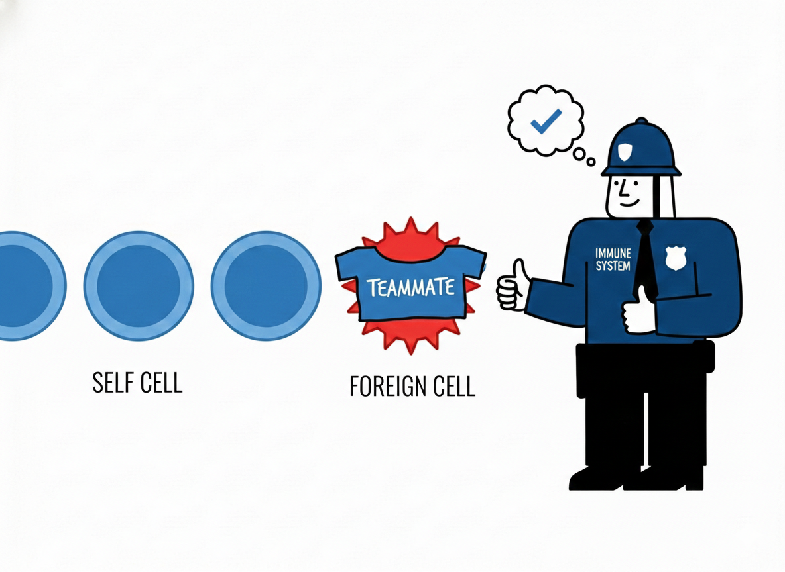

Game On: How the Body Knows Its Team

The Pre-Match Briefing: Why Team Colours Matter
Imagine you are watching an intense Real Madrid vs. Barcelona football game, where people are running so fast that you barely see their faces. How do the players identify their teammates? Yes, one answer is their team colour! When they see the team colours, they know it’s their teammate, pass the ball, and trust that they’ll score a goal!
Now, how do they know what colour their team is? Obviously, before the game, they see the colours and remember: this is our guy. Well, something similar also happens in our body. Have you ever wondered how our immune cells don’t attack our own cells? Is it because, during early development, they are exposed to self-cells, much like players seeing their team colours before the match? This was exactly the question asked by the British biologist Peter Medawar and his colleagues.
Kickoff: Messi Meets His Team
Think of Messi in the locker room before his big game. In the pre-match talk, if he is introduced to the colour blue, he learns it, and during the match, he instinctively trusts players wearing blue. He doesn’t learn this during the match; rather, he already knows: Blue = Teammate But what if you trick him? If you tell him his team is Red during the pre-match talk, but his friends walk out in Blue, he’ll treat his own teammates like invaders. He’ll tackle them, intercept their passes, and yes, Hala Madrid!
Early Training vs. Late Practice
Similarly, Medawar used two genetically distinct mouse strains, A and B. Cells from strain A were introduced into strain B mice in two different ways. Early exposure- live strain A cells were injected during very early development, either late in embryonic life or within the first 24 to 48 hours after birth, when the immune system is still immature.
In another group, the same cells were injected later in life, after the immune system had matured.
The Match Day Test: Skin Grafts as Goals
The mice were then allowed to grow normally. Once they reached adulthood, skin grafts from strain A mice were transplanted onto strain B mice. They observed that strain B mice exposed to strain A cells during early development accepted the skin graft, whereas those exposed later in life rejected it. Importantly, these tolerant mice still rejected skin grafts from unrelated third-party strains, showing that the immune system was not generally suppressed.
The Hall of Fame: How Medawar Rewrote the Playbook
And with these experiments, Medawar revealed a key principle: acquired immunological tolerance. Exposure to cells early in development teaches the immune system which cells belong to the body, just as a football player learns the team colours before the match. Early-exposed cells are treated as “self,” while new, unfamiliar cells are recognised as outsiders and rejected.
“Indeed, first impressions truly do matter!”
What our bodies see early on shapes how they respond for life, teaching the immune system to distinguish friend from foe, a lesson in recognition, memory, and trust that lasts a lifetime. So the next time you play, remember, your body’s team was chosen long before you even kicked a ball.
Want to discuss this paper? Have questions? Reach out!
📧 Email: srinidhisrinivasan02@gmail.com
Feel free to share your thoughts, corrections, or follow-up questions. We’d love to hear from you!
References
- Billingham, R. E., Brent, L., & Medawar, P. B. (1953). Actively acquired tolerance of foreign cells. Nature, 172(4379), 603. https://doi.org/10.1038/172603a0
- AI-generated image. (Gemini)